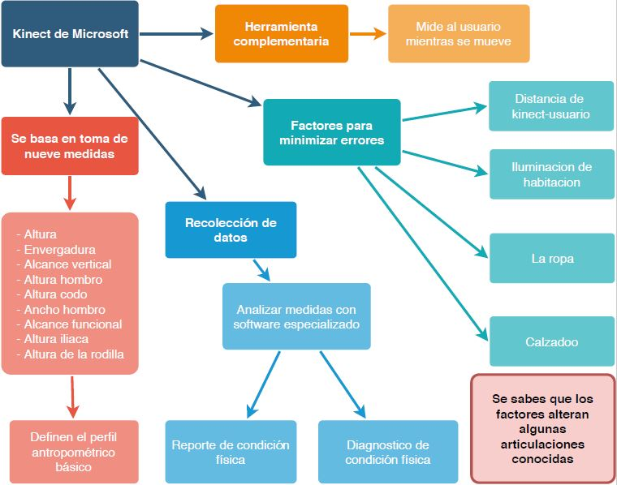
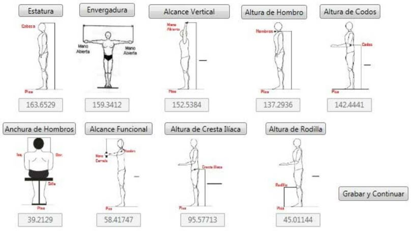
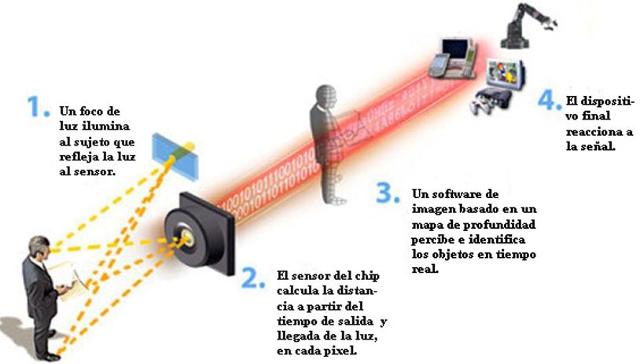

1. ESTADO DEL ARTE
1.1. ANTROPOMETRÍA DEPORTIVA
La aplicación de la antropometría en el deporte propicia la valoración de las características morfológicas en el rendimiento de la actividad deportiva del atleta. Por tanto, este análisis aporta aspectos provechosos y prácticos tanto como para el profesional en nutrición como para el profesional en ciencias de la actividad física y el deporte, siendo una herramienta de consulta para la valoración y seguimiento de la composición corporal y del biotipo en el ámbito deportivo. Para que, de este modo, se establezca pautas dietéticas y rutinas deportivas con el fin de mejorar el rendimiento de los atletas.
1.2.PERFIL ANTROPOMÉTRICO
Según la Sociedad Internacional de Avances en Cineantropometría (ISAK) existen dos perfiles usados mayormente para la valoración antropométrica, el restringido (17 mediciones) y el completo (42 mediciones). El perfil restringido es un subgrupo del perfil completo. Las mediciones están clasificadas en 5 categorías: básicas, pliegues, perímetros, longitudes y anchos.
1.2.1. PERFIL RESTRINGIDO
La medición de estos sitios permitirá hacer el cómputo del somatotipo, proporcionalidad, grasa corporal relativa (usando un restringido número de ecuaciones de regresión), índices de áreas de superficie del cuerpo, índice de masa corporal, cociente cintura cadera, patrón graso, y perímetros corregidos por pliegues.
1.2.2. PERFIL COMPLETO
Las medidas de los sitios abarcados en el perfil completo permiten hacer cálculos adicionales tal como la estimación de la grasa corporal (utilizando un extenso número de ecuaciones de predicción), y cálculo de masas ósea, muscular, adiposa y residual usando las técnicas del fraccionamiento de la masa corporal. También el cálculo de masa esquelética y músculo esquelética por varios métodos.
Figura 1. Mediciones antropométricas del manual ISAK. (Sitios incluidos en el perfil antropométrico (2017).Normas Internacionales para la Valoración Antropométrica. 2019, de ISAK)

Figura 2. Ficha de evaluación antropométrica del DINASEB.
1.3 FRACCIONAMIENTO DE LA MASA CORPORAL EN COMPONENTES
1.4. SOLUCIONES EXISTENTES
1.4.1. APLICANDO LAS TECNOLOGÍAS DE INFORMACIÓN PARA LA GESTIÓN DE DEPORTISTAS DE ALTO RENDIMIENTO
En este proyecto realizado por cuatro estudiantes de la Facultad de Ingeniería Mecánica y Eléctrico de la Universidad de Colima (México) presenta el desarrollo de un software para la gestión de deportistas basado en estudios antropométricos. Por un lado, se encuentra la migración del software a una aplicación web con su componente de inteligencia artificial que funcione como un asistente virtual, el cual analice los datos relacionados con los deportistas en una base de datos. Además, otro objetivo de este proyecto es utilizar la información antropométrica de cada deportista para tomar decisiones en aspectos relacionados con alimentación, entrenamiento; así como los avances del deportista.

Figura 1. Caso de uso del sistema de deportistas de natación.
El diseño de base de datos consta de cuatro tablas: Antropometría, Deporte, Entrenamiento y Deportista. Cada tabla de la base de daros presenta una clasificación, lo cual favorece a un acceso rápido de la información.
Figura 2.Base de datos optimizada con sus respectivos tablas.
<
Para la construcción de la aplicación web se empleó el lenguaje HTML. Además, se realizó un diseño de la estructura del sistema mediante wireframes, para lo cual se utilizó la herramienta Balsamiq. Adicionalmente se utilizó otra herramienta para el diseño de las interfaces de usuario mediante un esquema IU/UX denominada Axure con la finalidad de que la interacción del usuario con el software sea lo más amigable posible. Con los wireframes generados se generó nuevas interfaces de usuario las cuales permitieron un mejor manejo de la información. Como se puede ver en las figuras, el entrenador hace registro de información del sistema; además de llevar el control médico de sus deportistas. Y genera el reporte físico de cada deportista con sus respectivos datos antropométricos.
Figura 3.Entenador-registro de deportistas.

Figura 4.Entrenador-control médico.

Figura 5.Entrenador-registro físico datos antropométricos.
1.4.2. MEDICIÓN ANTROPOMÉTRICA BASADA EN KINECT
Esta solución presenta el desarrollo de una herramienta interactiva para tomar mediciones antropométricas utilizando el dispositivo Kinect de Microsoft como una alternativa complementaria a los dispositivos de medición disponibles, donde se miden a los usuarios mientras realizan movimientos específicos.


Figura 6.Medidas antropométricas recolectadas por Kinect.(Espitia Contreras, A. A. Development of a Kinect-based anthropometric measurement application)
En conclusión, las mediciones tomadas con este dispositivo son confiables al estar dentro de las diferencias de medias normales y diferencia de varianza, a pesar de los errores ocasionados por ciertos factores mencionados anteriormente.

Figura 7.Dtección de movimiento.(Carmody, Tim How motion detection works in xbox kinect)
NECESIDADES DE LA PROBLEMÁTICA
2. REQUERIMIENTOS DE DISEÑO
Tabla 1
Requerimientos de diseño.

Tabla 2
Requerimientos médicos.